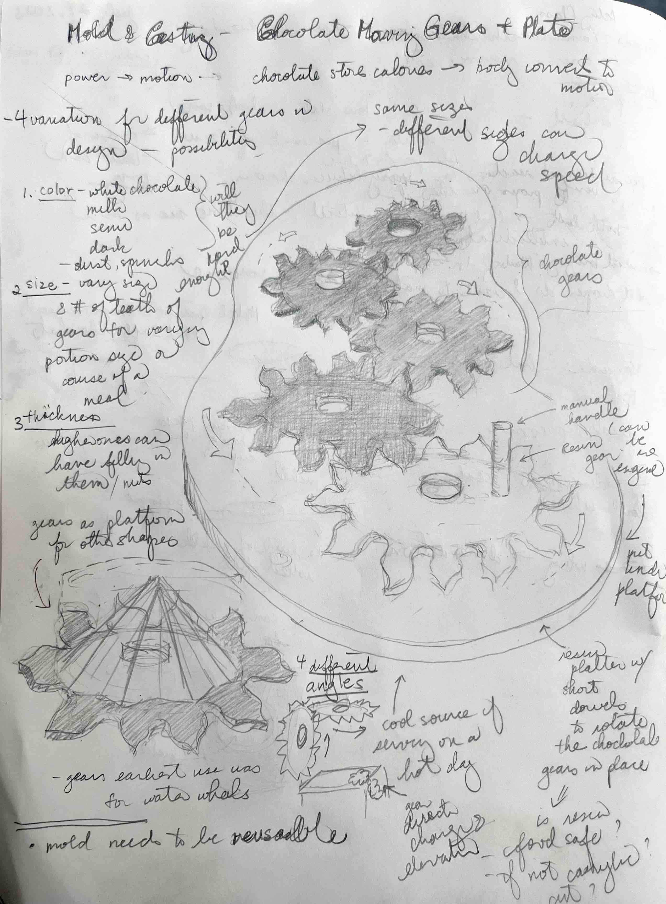

<br>
<h4>Chocolate Moving Gears: Molding and Casting</h4>
<br>
It took me a while to land on an idea that excited my imagination. And then it hit me as I glanced over the set of gears that I had cut to prototype moving water in my kinetic sculpture. We've all seen chocolate fountains which moves chocolate like water. I wanted to create spinning gears in chocolate on a resin clear plate, that when the one clear resin gear was spun by a person or motor would cause all the other gears to spin. It would make an interesting single serving of desert for a person to interact with or an entire display of edible gears that would all be spinning. Lit up from below or above and some metallic dust on each gear and I think it would be sight to behold. One could also put figures or abstract art on each one of them to make the spectical even more alluring.
On the pragmatic side, such a creation would enable exploration into molding and casting:
<ul>
<li><strong>Different materials</strong>: wood to chocolate (gears), plasticine to resin (resin plate). Also experimented from metal to chocolate (coins)</li>
<li><strong>Different types of molding material</strong>: food safe, silicon for resin.</li>
</ul>
Firstly, in the case of the mold for chocolate, I do want a reusable type mold so I can make multple chocolate gears. Secondly, I wanted work with resin to see how it would reproduce the ear compared to the PLA printed version of the ear sculpture.

<figcaption>I spent some time drawing out what would be an initial prototype to test out both the vision and the asthetics. From there, I could expand on the idea for the future.</figcaption>
Since my sister was visiting me, I decided to turn it into a party. I figured after the chocolate gears were made, we could eat them!
<figcaption>An evening on the balcony to make the food-safe molds for the chocolate. Only us and lots of bugs. I think one got into our mold!</figcaption>
<figcaption>I decided to start with the food safe casting of the gears as I figured the chocolate would be easier to work with and I would get experience with this before trying out the resin plate which I also thought would be bigger and harder.</figcaption>
<figcaption>I used plastic cups to measure out the two parts that was to be mixed together. I wanted to make sure I made enough to cover the gears. To contain the mold material I used a square barrier and also put plasticine around in case some of the mold material seeped into the bottom crevice. I did not use a hot glue gun as the instructions noted since this sounded too permanent. I used an reminent acrylic panel which was nice and smooth and so I could see what was happening underneath as the mold was curing.</figcaption>
<iframe class="video" src="https://www.youtube.com/embed/Kve-nD9m3Zw" title="YouTube video player" frameborder="0" allow="accelerometer; autoplay; clipboard-write; encrypted-media; gyroscope; picture-in-picture; web-share" allowfullscreen></iframe>
<figcaption>I didn't have a vacuum chamber so I researched on what to do to get out the bubbles. Based on what I learned, I tried to "burp" it by tapping on it and then using a toothpick to try to get some of the bubbles out. I was able to get a number of the large bubbles but there were still quite a number of small bubbles. This was after trying to be really careful during the mixing process. </figcaption>
<figcaption>I had some extra mixed mold material so I decided to also cast the front and backs of the Canadian nickel that my sister had in her wallet. I thought it would be great to see how well details were captured. Also, nothing like chocolate money!</figcaption>
<figcaption>Bottom of the mold for the gears. Like staring up at a clear swimming pool. I can it looks like some of the mold material had seeped below the gears.</figcaption>
<img src="06_MoldCast_NickelCast_Stark_July24.jpg" class="photo" alt="Vision for Chocolate Gears.">
<figcaption>I had to rip apart the plastic cups to dislodge the molds. They turned out pretty well, although the real test will be the casting in chocolate. One thing was the letters on the bottom of the plastic cups I used did obscure or at least visually obstructed the mold. In future, when producing a reuseable mold, I would definitely use a smooth bottom as noted with the gears below. </figcaption>
<figcaption>I was really please with how the square came out for the gear mold. In future I would make sure that the gears were not so close to the sides.</figcaption>
<figcaption>The mold material did seep a little below the gears so I had to use a knife to carefully cut along the perimeter. The wood material also made the mold material harder to dislodge.</figcaption>
<figcaption>I reflected on how I would use different molding techniques to make a mold of the nickel in the future. I think the main thing I would try is to use a flatter surface and if I really wanted a full two sided nickel, I would try to use plasticine half way up the nickel so I would make a two part mold. I would not use the pot method as this would mean getting a one use mold...pretty expensive for a 5 cent coin! </figcaption>
<figcaption>After careful cutting I was able to get these molds ready. They look great, but proof is in the chocolate!</figcaption>
<figcaption>I decided on a mix of dark and a little less semi-sweet chocolate for the right balance in how I like my chocolate.</figcaption>
<figcaption>To keep things simple, I used a microwave to heat the melt the chocolate.</figcaption>
<figcaption>Put the melted chocolate into a zip lock bag to use as a piping bag. Makes the process of transfering chocolate to mold a bit less messy.</figcaption>
<iframe class="video" src="https://www.youtube.com/embed/25Po9VCQ4Ic" title="YouTube video player" frameborder="0" allow="accelerometer; autoplay; clipboard-write; encrypted-media; gyroscope; picture-in-picture; web-share" allowfullscreen></iframe>
<figcaption>Piping of chocolate into gear molds.</figcaption>
<figcaption>Used the back of a chef's knife to clear off the excess chocolate.</figcaption>
<iframe class="video" src="https://www.youtube.com/embed/P2gPiZuPTNY" title="YouTube video player" frameborder="0" allow="accelerometer; autoplay; clipboard-write; encrypted-media; gyroscope; picture-in-picture; web-share" allowfullscreen></iframe>
<figcaption>Leveling chocolate in mold.</figcaption>
<figcaption>Put two dollops of chocolate into the nickel molds.</figcaption>
<figcaption>Front of Canadian nickel in chocolate.</figcaption>
<figcaption>Back of Canadian nickel in chocolate.</figcaption>
<figcaption>Well, a key learning is casting wood is not a good idea. Perhaps if it was sanded, but even then it is porous. I think I will need to cut gears out of acrylic and try that out. Given my experience with PLA, I also don't see that working.</figcaption>
<figcaption>This morning, with new energy, I carefully was able to remove 2 of the remaining 3 gears in one piece. The other one cracked in two before I was able to remove it. Given the sequence, I think I also got better at the ways to work the mold so that the chocolate gear comes out in one piece.</figcaption>
A few lessons from this exploration:
<ul>
<li>Having a good mold casing is important. A great flat surface helps in the case of molds that are more "2.5D". While using disposable plastic cups are great for one use molds, having a nice container for the mold material for multi-use molds will make them more pleasant to work with over time.</li>
<li>While there are lots of possibilities of object materials to cast from, so far, the smoother metal and acrylic did better than the rougher, more porous wood. This not only affects making the mold, but also subsequent removal of objects. Now chocolate is especially delicate. I can imagine if it was metal I was casting, perhaps the rough wood would give the gears a more honed look than shiny. However, I also most think the honed look can be achieved after the casting.</li>
<li>While it is important to have a certain thickness to a silicon mold so it has strength, you also don't want it to be too think. I think my chocolate gear mold was too thick so it is harder to bend to take out the chocolate. Of all my assertions so far, this one I feel I would need to test more. There may be other issues with a more flexible mold that I don't know that may counter this statement.</li>
</ul>
In terms of next steps, I would want to play with resin as a casting material and then also try acrylic gears to make my next chocolate gear mold. I could also try printing a gear or using the wood gear to make a mold for a gear that I can then cast with metal. From there, I can take the metal gear and use it to make the food safe mold as above and use this. This may result in a smoother mold like my experience with molding and casting a chocolate nickel.
<iframe class="video" src="https://www.youtube.com/embed/Bgb3FaoF_ss" title="YouTube video player" frameborder="0" allow="accelerometer; autoplay; clipboard-write; encrypted-media; gyroscope; picture-in-picture; web-share" allowfullscreen></iframe>
<figcaption>Very rudimentary demonstration of the concept. Of course need the resin base with the dowels to keep gears in place.</figcaption>